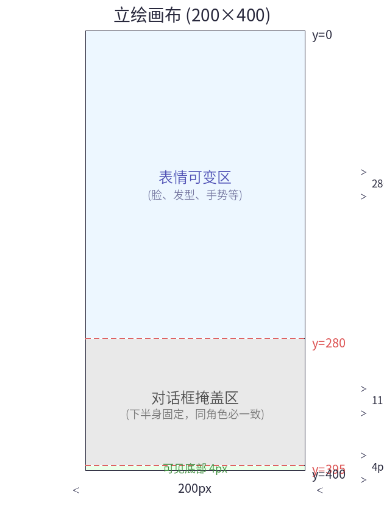
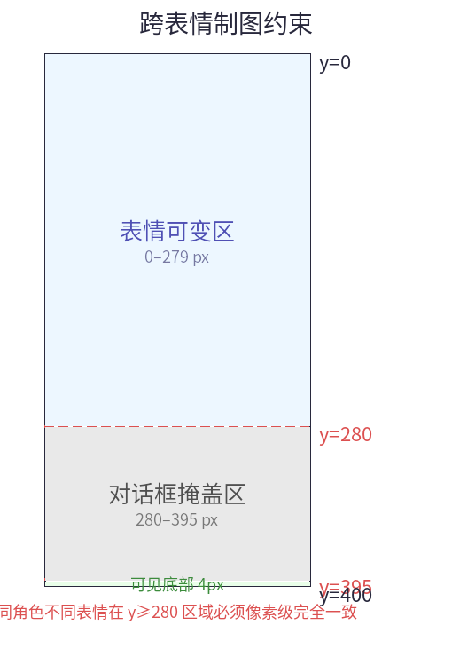
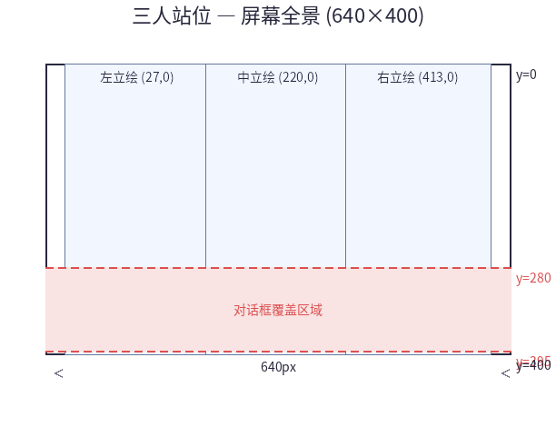

立绘与角色
创建：2026-06-10
最后更新：2026-07-27
本文说明立绘与背景素材的制作规范。
1. 硬性约束
1.1 透明色约定
PC-98 没有 alpha 通道。立绘透明通过色键透明（Color Key）实现。
| 约定 | 说明 |
|---|---|
| 透明索引 | 调色板索引 15（引擎约定，vram_blit_sprite 跳过此索引） |
| 不透明索引 | 索引 0–14，共 15 个实际颜色 |
| 素材格式 | RGBA PNG（透明背景），alpha<128 → 索引 15 |
禁止使用白底图：如果角色内有白色（眼睛高光、皮肤高光），会被 --sprite-key 误判为透明，导致角色出现像素漏洞。
1.2 立绘朝向约定
所有立绘素材统一为右站位——角色站立在画面右侧，身体朝向左侧（面朝中）。引擎通过水平翻转实现左站位：
| 站位 | 水平翻转 | 效果 |
|---|---|---|
| 右位 | 不需 | 原图，角色面朝左侧（面朝中） |
| 中位 | 不需 | 原图，角色面朝左侧 |
| 左位 | 需要 | 翻转后角色面朝右侧（面朝中，与右侧对称） |
翻转由 char 位置参数隐式控制（左位 l 自动水平翻转），素材本身不做左右两份。
2. 立绘素材规范
2.1 标准尺寸
| 宽×高 | 画布 | 说明 |
|---|---|---|
| 200×400 | 200×400 | 全高立绘，底部接触屏幕底，顶部对齐 y=0 |
2.2 素材要求
- 格式：RGBA PNG，带 alpha 透明通道
- 画布：角色在画布中适当位置——画布就是精灵的边界
- 透明区：角色轮廓外的所有像素 alpha=0
- 索引约束：精灵最多用 15 色（索引 0–14），第 16 色（索引 15）为透明
- 制图约束：同角色不同表情的立绘，对话框以下区域 [y=280, 400) 必须像素级完全一致

2.3 文件命名约定
| 文件 | 含义 |
|---|---|
fei-normal.MAG | fei 默认表情 |
fei-happy.MAG | fei 开心表情 |
fei-sad.MAG | fei 难过表情 |
PNG 源文件与 MAG 同名不同后缀：fei-normal.png → fei-normal.MAG。
表情名在 char_expressions.expr_name 列中记录，引擎不依赖文件名解析表情——只通过 asset_map.id 索引。
2.4 同角色跨表情制图约束
引擎的"换表情不重绘对话框"优化依赖以下制图规则：

| 区域 | Y 范围 | 高度 | 要求 |
|---|---|---|---|
| 表情可变区 | 0–279 | 280 px | 每个表情可不同 |
| 固定区（对话框掩盖） | 280–395 | 116 px | 像素级一致 |
| 固定区（可见底部） | 396–399 | 4 px | 像素级一致 |
| 固定区合计 | 280–400 | 120 px | 同角色必一致 |
为什么？ 换表情时引擎只重绘y<280的区域，y>=280的 VRAM 像素保持原样。如果同角色不同表情的下半身有差异，将出现"换脸后身体残留错位"的视觉故障。
制图建议：从同一全身底稿裁剪不同表情版本，仅重绘 y<280 的部分。
2.5 转换命令
python3 -m tools.naiz_conv.img2mag char_hime.png -o CHR_HIME.MAG --sprite --256- 自动检测 alpha 通道 → 透明区映射为索引 15
- 不 resize（保持原始尺寸 200×400）
- 写入
"sprt\x1a"用户字符串
3. 背景素材规范
3.1 规格
| 参数 | 值 |
|---|---|
| 分辨率 | 640×400 |
| 色数 | 256 色（PEGC 模式） |
| 格式 | MAG (MAKI02, screen_mode 0x80) |
| 输入格式 | PNG 或 JPG（PIL 支持的任何格式） |
3.2 调色板保护
背景 MAG 加载时，引擎自动跳过以下索引：
| 索引 | 保留色 | 用途 |
|---|---|---|
| 7 | #FFFFFF 白 | 对白文字、对话框边框、提示 |
| 8 | #555555 灰 | Ctrl 快进提示 |
引擎自动处理保护，制作者无需担心。如果背景中有需要精确色的白色/灰色，用索引 6、14 等替代即可。
3.3 转换命令
python3 -m tools.naiz_conv.img2mag bg_photo.png -o BG001.MAG --dither --256
python3 -m tools.naiz_conv.img2mag bg_flat_colors.png -o BG002.MAG --256| 标志 | 效果 |
|---|---|
--dither | Floyd-Steinberg 抖动（照片/渐变推荐） |
| 无标志 | 直接量化（像素风/平面色推荐） |
3.4 工作流程
1. 绘制 640×400 背景
2. 导出 PNG → img2mag bg.png -o BG001.MAG --dither
3. BG001.MAG → IMAGE.DAT（pack_images.py 打包）
4. 引擎加载 → image_set_palette + vram_blit4. 站位布局
4.1 站位映射表
NB 脚本 char() 中的 l/c/r 经引擎 pos_to_x() 映射为像素坐标：
| pos | 含义 | x 坐标 |
|---|---|---|
l | 左位 | 27 |
c | 中位 | 220 |
r | 右位 | 413 |
立绘 y 固定为 0，顶部对齐屏幕顶，底部 400px 接触屏幕底。对话框 [y=280,395] 覆盖立绘底部 116px。
三人布局（全景）：

4.2 两人布局
| 位 | 200×400 时 x |
|---|---|
| 左 | 90 |
| 右 | 350 |
4.3 单人布局
| 位 | 200×400 时 x |
|---|---|
| 中 | 220 |
5. 精灵操作与渲染
5.1 精灵操作
| 操作 | 方法 | 对话框影响 |
|---|---|---|
| 显示精灵（首次） | char(key, pos, expr, body) | 无影响 |
| 换表情 | char(key, pos, expr, face) | 不重绘对话框 ✅ |
| 换装/换位 | char(key, pos, expr, body)（已显示时） | 自动重绘对话框 ✅ |
| 隐藏所有 | char(hideall) | 清除精灵，对话框区域恢复纯背景 |
5.2 渲染顺序
1. 背景全屏 → bg()
2. 立绘 → char()
3. 对话框 → 首次对话命令
4. 文字 → key(){}- 立绘在对话框之下：对话框在第二趟精灵之后绘制，立绘延伸入对话框区域的部分被对话框覆盖。
- 文字始终在最顶层：写在对话框底色之上。
- 半透明对话框：立绘底部通过点阵隐约透出——见 cf03-对话框样式方案。
注：以上所有图层均写入同一图像 VRAM（Graphics Plane A+B 组合后的 256 色 packed-pixel 区域）。Text Plane 不使用，文字作为位图绘制到图像 VRAM。详见 fd01 §1.4。
换表情时（face 类型）：仅重绘 y<280 区域，对话框不动。这要求同角色不同表情在 y≥280 区域像素级一致（见 §2.4）。
6. 调色板管理
背景与立绘共享同一套 256 色调色板——引擎在加载背景时设置全场景调色板，精灵加载时不改调色板。
工作流程：
1. 制作背景 → img2mag bg.png -o BG001.MAG --dither
2. 在 Aseprite/Krita 中置入同一调色板
3. 导出角色 RGBA PNG，按 `角色-表情.png` 命名
4. 在 ASSETS.DB 中注册：
asset_map — 每个 MAG 文件一个 entry
characters — 角色定义（charname → 显示名）
char_expressions — 角色 → 表情 → asset_id 映射
5. pack_images.py 打包（自动做跨表情 y≥280 一致性校验）
6. IMAGE.DAT → 引擎渲染7. 与其他文档的关系
| 文档 | 内容 |
|---|---|
| fd01-引擎基本概念 | 引擎基本概念（背景/对白） |
| cf03-对话框样式方案 | 对话框预设样式 |
| mc03-图层渲染与换装机制 | 渲染管线、精灵操作、换装机制 |
| sc01-NB剧本概述 | bg/host/key/scene 等基础命令 |